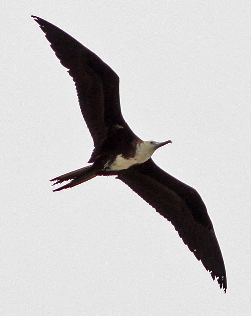

| These photographs accompany records that have been recently submitted to the committee. This record
has been ACCEPTED.  Magnificent Frigatebird Fregata magnificens 29 June 2010, Batiquitos Lagoon, Carlsbad., SD 2010-063 © 2010 Matt Sadowski Back to CBRC Rare Bird Photos |